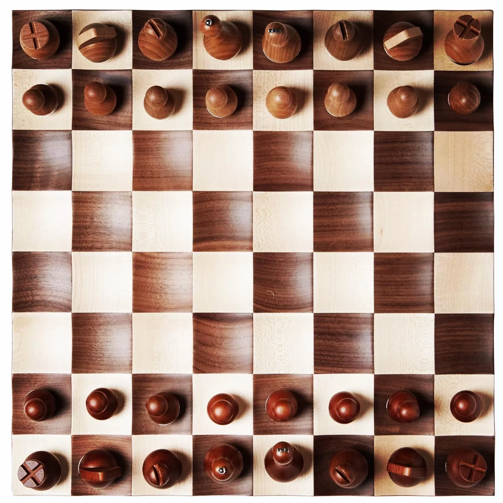
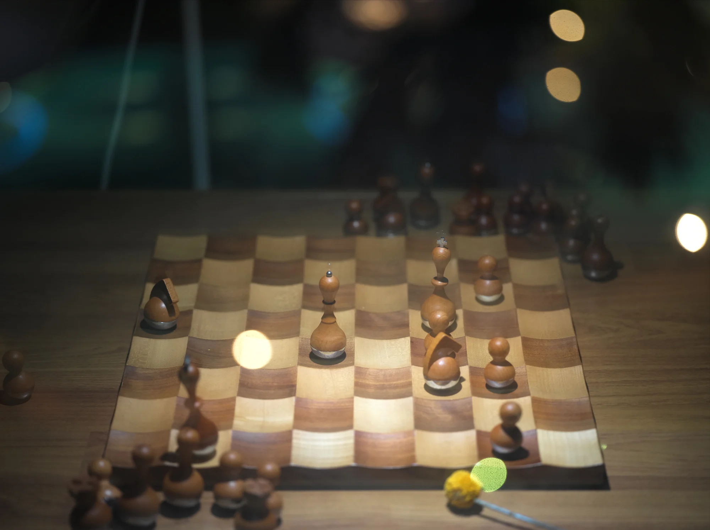

A wobbly game of chess
摇摇晃晃的象棋

中文
我偶尔会下国际象棋，真的是很偶尔，下得也不怎么样。家里几个人的水平都差不多，有时候我和白老师两个人对着下一两局。前两年儿子突然喜欢上了国际象棋，那段时间我每天都拉着他下一局，下了不少，两个人的水平却一直没什么进展。
这副棋我其实喜欢了很久，是加拿大的家居品牌Umbra出的，叫Wobble，我买的是胡桃木的那一款。作为家里的一件摆设，它足够有档次，实木的棋盘，颜色很沉稳，棋子是木头和金属拼在一起的不倒翁造型。这些年我在网上、在不同国家的店里看过的国际象棋也不算少了，这一副是我觉得最合自己审美的。所以就算不拿出来下，只是把它放在家里当个摆件，看着也赏心悦目。

但坦白说，作为一副拿来下的国际象棋，它其实不太称职。每一颗棋子的底部都是半圆形的金属，棋盘上的每一格也都做成了弧面，棋子放上去总是站不稳，一直在那里晃个不停。真下起棋来，看着满盘的棋子摇来摇去，挺分心的。所以说，这副棋的观赏价值，大概远远大于它的使用价值。说起来我自己还是做设计的，可这差不多就是我买一切喜欢的东西时的标准，天平总是往一边歪，首先它得好看，得让我喜欢，实用上稍微让一点也没关系。买东西，不就是买个自己喜欢吗？
这副棋原价好像是五百新币，挺贵的，有一天我在亚马逊上刚好碰到它打特价，两百五十六新币，差不多是原价的一半，就拿下了。不过现在想想，就算是半价，好像也不便宜。这么想起来，还是应该每天都练一练，今天晚上就叫上儿子，一起来下一盘，棋子摆上去，大概还是会晃。
English
I play chess occasionally. Very occasionally, really, and not particularly well. Everyone at home is at about the same level. Sometimes my wife and I sit down for a game or two. A couple of years ago, my son suddenly took an interest in chess, and for a while I would get him to play a game with me every day. We played quite a few, though neither of us seemed to get much better.
I had liked this set for a long time. It is called Wobble, made by the Canadian homeware brand Umbra, and I bought the walnut version. As something to have on display at home, it has a certain presence: a solid wood board in quiet, rich colours, and pieces made of wood and metal, shaped like little roly-poly toys. Over the years, I have seen quite a few chess sets online and in shops in different countries. This is the one that comes closest to my taste. Even when no one is playing, it is a pleasure just to have it sitting there.
But honestly, as a chess set to actually play with, it is not very good at its job. Each piece has a rounded metal base, and every square on the board has a curved surface too. Put the pieces down and they never quite keep still. They just carry on wobbling. During a game, a whole board of pieces rocking back and forth can be rather distracting. So its value as something to look at probably far exceeds its value as something to use. I am a designer myself, but this is more or less how I judge everything I like enough to buy. The scales always tip the same way: first, it has to look good, and I have to like it. I do not mind giving up a little practicality. Isn't buying things really about buying what you like?
I think the original price was five hundred Singapore dollars, which was quite expensive. Then one day I happened to find it on sale on Amazon for two hundred and fifty-six, almost half price, so I bought it. Thinking about it now, even at half price it wasn't exactly cheap. All the more reason to practise every day, perhaps. Tonight I will ask my son to join me for a game. We will set the pieces on the board, and they will probably still wobble.
中文原文
我偶尔会下国际象棋，真的是很偶尔，下得也不怎么样。家里几个人的水平都差不多，有时候我和白老师两个人对着下一两局。前两年儿子突然喜欢上了国际象棋，那段时间我每天都拉着他下一局，下了不少，两个人的水平却一直没什么进展。
这副棋我其实喜欢了很久，是加拿大的家居品牌Umbra出的，叫Wobble，我买的是胡桃木的那一款。作为家里的一件摆设，它足够有档次，实木的棋盘，颜色很沉稳，棋子是木头和金属拼在一起的不倒翁造型。这些年我在网上、在不同国家的店里看过的国际象棋也不算少了，这一副是我觉得最合自己审美的。所以就算不拿出来下，只是把它放在家里当个摆件，看着也赏心悦目。
但坦白说，作为一副拿来下的国际象棋，它其实不太称职。每一颗棋子的底部都是半圆形的金属，棋盘上的每一格也都做成了弧面，棋子放上去总是站不稳，一直在那里晃个不停。真下起棋来，看着满盘的棋子摇来摇去，挺分心的。所以说，这副棋的观赏价值，大概远远大于它的使用价值。说起来我自己还是做设计的，可这差不多就是我买一切喜欢的东西时的标准，天平总是往一边歪，首先它得好看，得让我喜欢，实用上稍微让一点也没关系。买东西，不就是买个自己喜欢吗？
这副棋原价好像是五百新币，挺贵的，有一天我在亚马逊上刚好碰到它打特价，两百五十六新币，差不多是原价的一半，就拿下了。不过现在想想，就算是半价，好像也不便宜。这么想起来，还是应该每天都练一练，今天晚上就叫上儿子，一起来下一盘，棋子摆上去，大概还是会晃。